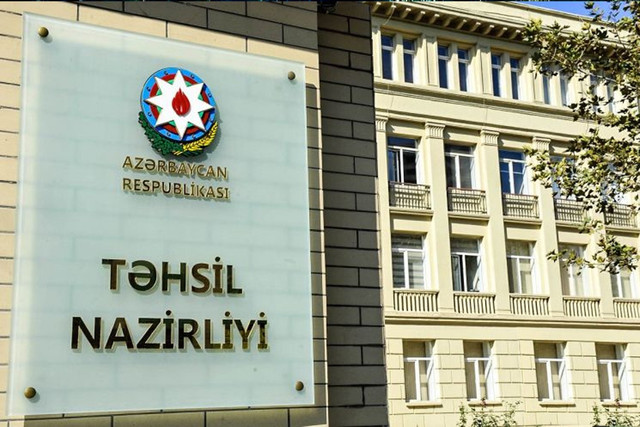

| Bakı Dövlət Universiteti (BDU) | Azərbaycan Texniki Universiteti (AzTU) | Azərbaycan Dövlət İqtisad Universiteti (UNEC) | Bakı Ali Neft Məktəbi (BANM) | Bakı Mühəndislik Universiteti (BMU) | Azərbaycan Tibb Universiteti (ATU) | Azərbaycan Dillər Universiteti (ADU) | Azərbaycan Dövlət Pedaqoji Universiteti (ADPU) |
|---|---|---|---|---|---|---|---|
|
|
|
|
|
|

|

|

|
| Elçin Babayev | Vilayat Vəliyev | Ədalət Muradov | Elmar Qasımov | Həsən Həsənov | Əhliman Əmiraslanov | Kamran Əsədov | Ceyhun Bayramov |
| Doğum ili: 1966-cı il | Doğum ili: 1963-cü il | Doğum ili: 1970-ci il | Doğum ili: 1970-ci il | Doğum ili: 1964-cü il | Doğum ili: 1952-ci il | Doğum ili: 1962-ci il | Doğum ili: 1977-ci il |
| Bitirdiyi universitet: Bakı Dövlət Universiteti (BDU) | Bitirdiyi universitet: Bakı Dövlət Universiteti (BDU) | Bitirdiyi universitet: Bakı Dövlət Universiteti (BDU) | Bitirdiyi universitet: Azərbaycan Neft və Sənaye Universiteti (indiki Azərbaycan Dövlət Neft və Sənaye Universiteti) | Bitirdiyi universitet: Bakı Dövlət Universiteti (BDU) | Bitirdiyi universitet: Azərbaycan Tibb Universiteti (ATU) | Bitirdiyi universitet: Bakı Dövlət Universiteti (BDU) | Bitirdiyi universitet: Bakı Dövlət Universiteti (BDU) |
| Bitirdiyi ixtisas: Filologiya (Azərbaycan dili və ədəbiyyatı) | Bitirdiyi ixtisas: Mexanika və Riyaziyyat | Bitirdiyi ixtisas: İqtisadiyyat | Bitirdiyi ixtisas: Neft və qaz mühəndisliyi | Bitirdiyi ixtisas: Fizika | Bitirdiyi ixtisas: Tibb (Həkimlik) | Bitirdiyi ixtisas: Filologiya (İngilis dili) | Bitirdiyi ixtisas: Pedaqogika |
| Hər biri Bakı şəhərində anadan olub. | |||||||
| Elmi dərəcəsi: Filologiya elmləri doktoru, professor | Elmi dərəcəsi: Fizika-riyaziyyat elmləri doktoru, professor | Elmi dərəcəsi: İqtisad elmləri doktoru, professor | Elmi dərəcəsi: Texnika elmləri doktoru, professor | Elmi dərəcəsi: Fizika elmləri doktoru, professor | Elmi dərəcəsi: Tibb elmləri doktoru, professor | Elmi dərəcəsi: Filologiya elmləri doktoru, professor | Elmi dərəcəsi: Pedaqogika elmləri doktoru, professor |
| Vəzifəyə təyin olunduğu il: 2020 | Vəzifəyə təyin olunduğu il: 2009 | Vəzifəyə təyin olunduğu il: 2018 | Vəzifəyə təyin olunduğu il: 2015 | Vəzifəyə təyin olunduğu il: 2018 | Vəzifəyə təyin olunduğu il: 2007 | Vəzifəyə təyin olunduğu il: 2016 | Vəzifəyə təyin olunduğu il: 2019 |
Ümumilikdə, 2023-cü ildə təhsilverənlərin
sertifikatlaşdırılması prosesinin test mərhələsində 31 207 təhsilverən iştirak edib.

Mərkəzə müraciət bölməsi
Siz bu bölmədə Mərkəzin direktoru və direktor müavinlərinə elektron müraciət ünvanlaya bilərsiniz
Diqqət
Məktub yaz
- Məlumatlar düzgün daxil edilməlidir müraciətin baxılması minimum 1 həftə maksimum 16 gün ərzində olur. Qəbul günləri üçün mərkəzə yaxınlaşmaqınız xahiş olunur.
- Müraciətlə bağlı cavab almayanadək eyni mövzu ilə təkrar müraciət etməməyiniz xahiş olunur, əks təqdirdə müraciətin baxılması və cavablandırılması gecikəcək geri dönüşü gmail vasitəsi ilə alacaqsınız.